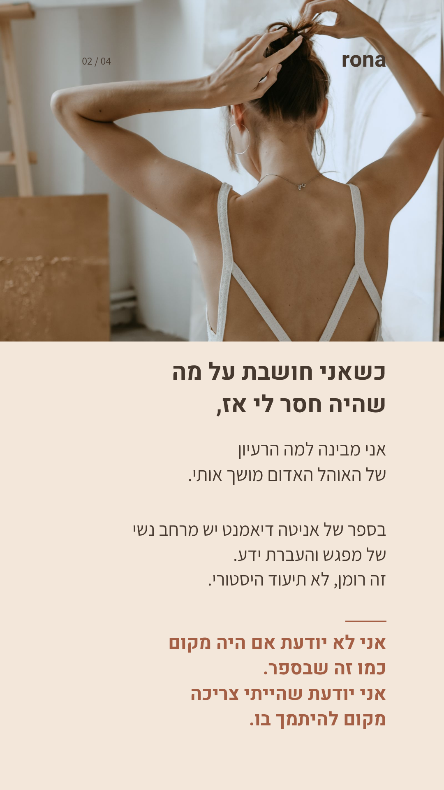
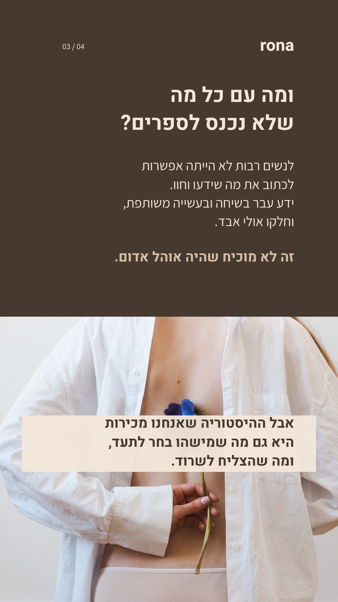

1. האוהל שהייתי צריכה
15 שניות · צילום ותנועה עדינה
ארבעה סטוריז על הבדידות אחרי הלידה, על הסיפורים שנשמרו ועל המקום שבו אפשר להיתמך היום.
סטוריז 1 ו־4 מונפשים. סטוריז 2 ו־3 שקטים ומוכנים גם כתמונות. את הסקר ותיבת השאלה מוסיפים באינסטגרם כמדבקות כדי לאפשר תשובות. האפשרויות שמופיעות בעיצוב הן טקסט בלבד.
15 שניות · צילום ותנועה עדינה

עיצוב שקט · תמונה או וידאו של 15 שניות

עיצוב שקט · תמונה או וידאו של 15 שניות
13 שניות · שאלה והזמנה לשתף
לעריכה, פתחי את הסטודיו ובחרי בסדרה החדשה שמופיעה מעל העיצובים הקודמים. הטקסט, הצילום, הצבעים, המיקום ותזמון הכניסה נשארו ניתנים לעריכה. הצילומים הם צילומי מאגר להמחשה, לא צילומים אישיים שלך.
מקורות ורישיונות הצילומים